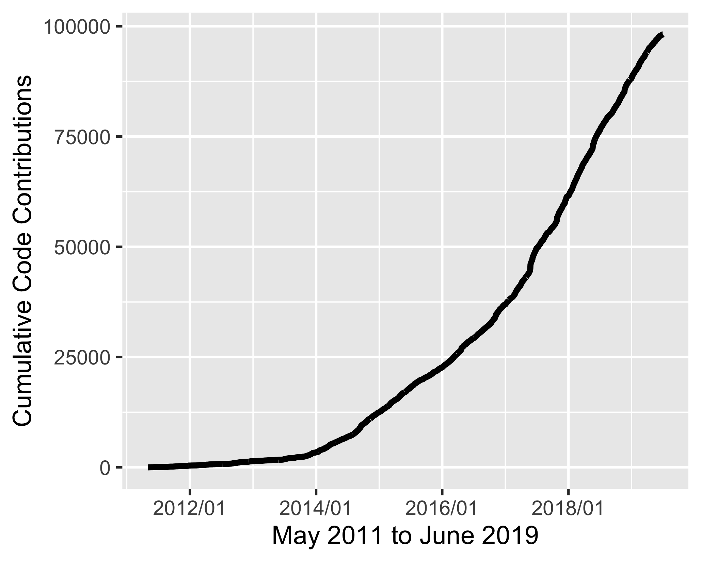

rOpenSci Software Development
Status and Future
thematic areas
- literature/text-mining
- taxonomy
- http tools
- security
- computing infrastructure
- geospatial
- visualization
- image processing
- data access
- etc ...
Code contributions: all

Usage by: Citations

Usage by: Reverse dependencies
non-R pkg related projects
- Jeroen's CRAN like repo
- Fishbase API
- CRAN Checks API
Moving forward: Staff
- Staff work increasily focused on infrastructure
- Jeroen has already been doing
- Scott moving towards this: giving "API clients" to other maintainers
Strengths
- literature/text-mining
- taxonomy
- imaging
- data access
Could do more
- workflow tools (e.g., drake)
- image processing tools (e.g., magick)
- metadata/data publishing tools (e.g., eml, etc.)
- tools that tie together disparate data (e.g., climate + species occ.'s)
Moving forward: should we focus on any areas?
- My take: no need to try to focus on subject areas
- since staff moving towards infrastucture tools
- But are there funding or other reasons to focus on any subject areas?
- lack of good tools in area X
- good chance of getting funding in area Y